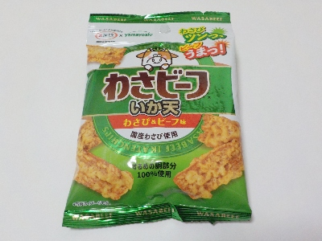
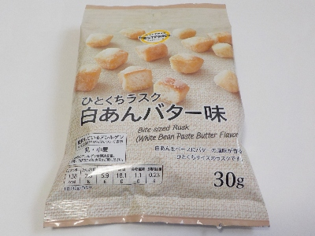
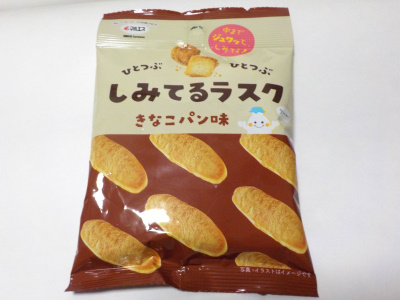
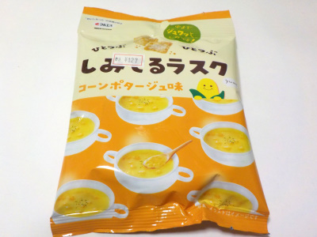

マルエスのわさビーフいか天。
2025/01/12

いか天にバーベキュー味とわさび味がプラスされて、複雑な味わいになっています。
それぞれの味が主張してます。味付けはパウダーなんですが、ビーフパウダーが多くかかっているところはビーフ味。わさびパウダーが多くかかっているところはワサビ味になっていました。
一度にいろいろな味が楽しめました。
大阪府堺市中区けな町86-1
2025/01/12

いか天にバーベキュー味とわさび味がプラスされて、複雑な味わいになっています。
それぞれの味が主張してます。味付けはパウダーなんですが、ビーフパウダーが多くかかっているところはビーフ味。わさびパウダーが多くかかっているところはワサビ味になっていました。
一度にいろいろな味が楽しめました。
2024/08/15

白あんが付いてる甘いラスクです。あんこがあるので、カリカリとかサクサクした食感ではなかったです。
大きさがマチマチで、いろんなサイズのラスクが入っていました。パッケージ写真もそんな感じですね。
味はあんトーストです。気軽につまんで食べれるのはいいですね。
2023/08/03

きなこパン味がしっかりしみてます。たぶん。
正直きなこパンがどんな味か分からないので、これがきなこパンの味なんだーって思いながら食べました。
ちょっと水分を含んだきなこの味がしました。甘くて濃い感じのきなこ味が美味しかったです。
カリカリしてなくてホロっとしてるって思いました。
2022/09/29

1.5センチくらいの四角いパンにコーンポタージュ味がしみていました。
小さいラスクというより大きいクルトンな感じがしました。
なのでお菓子を食べてるというより、食事をしている気分でした。
濃い味なので、飲み物と一緒に食べると美味しいと思いました。